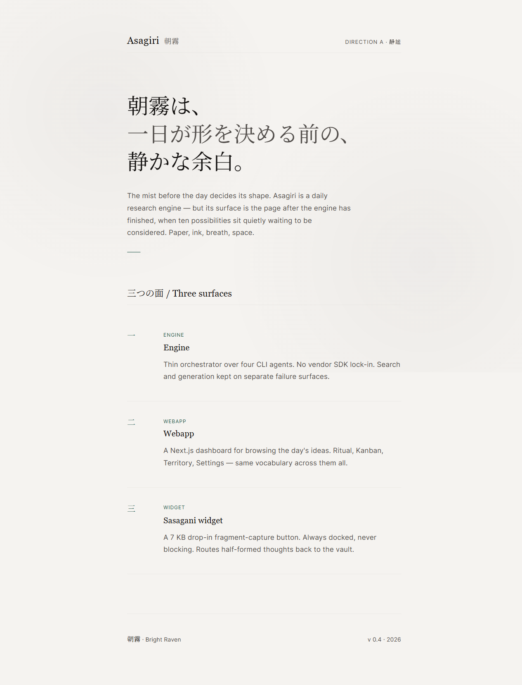
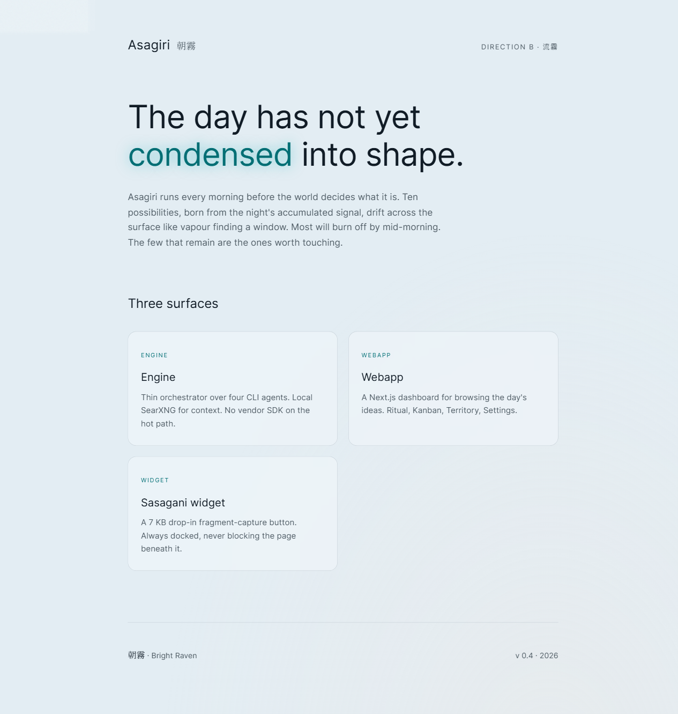
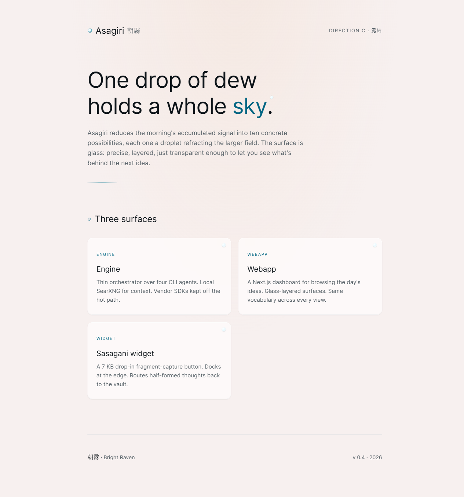

Three directions, one chosen.
Before settling on the current Asagiri look (drifting mist with dew on glass), three distinct directions were prototyped and put side by side. The chosen direction, Ryūmu, is the foundation the rest of this site is built on. The other two are kept here as honest alternatives.

Direction A
静謐 Seihitsu
Paper and ink. Kenya Hara minimalism. The mist has burned off, only stillness remains.

Direction B · chosen
流霧 Ryūmu
Mist as a living thing. Three SVG noise layers drift slowly. Letters breathe.

Direction C
露結 Tsuyumusubi
Glass surfaces, focused light. A single dew drop holding the whole sky.